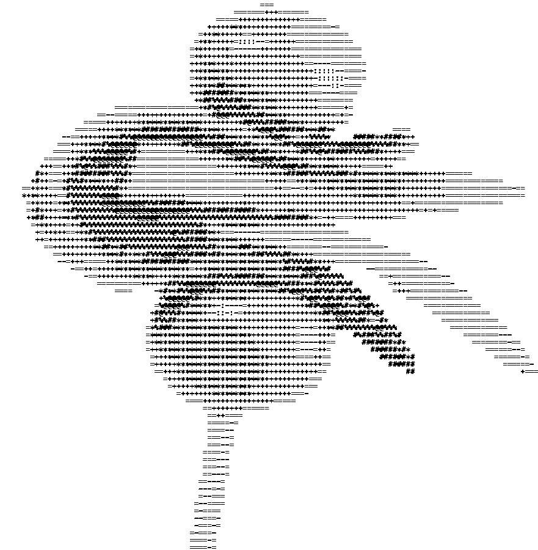

BUFFET VISUAL
Esta mesa es
para ordenador.
Esta web no está disponible en móviles ni tablets. Abre Buffet Visual desde un ordenador para continuar.
Si ya estás en uno, amplía la ventana.
TE ESPERAMOS EN OTRA PANTALLA.
UNA EXPERIENCIA PARA COMER MIRANDO
Tú eliges qué comer.
Tu pantalla prepara el resto.
Una extensión que observa el tiempo que pasas en cada web y te sirve un menú con los sabores de tu consumo digital.
DESCARGAR LA EXTENSIÓNPARA CHROME, EDGE Y BRAVE · ORDENADOR

EL MOMENTO DE LA CUENTA
En tu menú, pasa el ratón por una imagen para detenerla y verla de cerca. Cuando quieras, pide la cuenta.
Bienvenido a Buffet Visual,
en esta experiencia observaremos
qué ves mientras comes...
TU MESA, EN CUATRO PASOS
Guarda el ZIP en tu ordenador y extrae su contenido. Conserva la carpeta en ese lugar.
DESCARGAR ZIP ↓Abre la página de extensiones de tu navegador y activa «Modo de desarrollador».
Chrome: chrome://extensions
Edge: edge://extensions
Brave: brave://extensions
Pulsa «Cargar descomprimida» y elige la carpeta extension
que has extraído. Fija Buffet Visual en la barra del navegador.
Recarga las pestañas de YouTube y Twitch que ya estuvieran abiertas.
Abre la extensión, avanza por las tarjetas de bienvenida y pulsa «PULSA AQUÍ PARA EMPEZAR». Cuando termines, vuelve a abrirla y responde «sí». Se detendrá la sesión y se descargará tu menú HTML.
¿Ya tienes Buffet Visual instalado? Conserva tu carpeta actual y sigue las instrucciones de actualización del README para mantener tu historial.
ANTES DE SENTARTE
El tiempo de la pestaña visible mientras la ventana del navegador tiene el foco. En YouTube y Twitch también registra los enlaces y títulos del contenido reproducido. No lee el contenido de tus correos ni de tus documentos.
En el perfil de tu navegador y en los archivos que descargues. La extensión no envía tu sesión a un servidor.
No. Es una traducción de tu tiempo a un importe estimado, usando los valores por minuto definidos para esta experiencia. No genera ningún cargo.